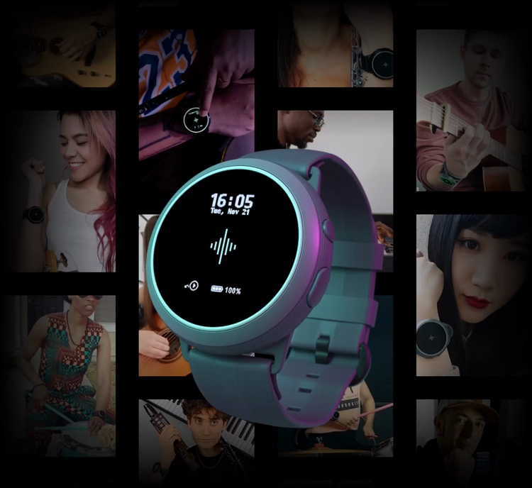
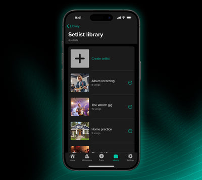
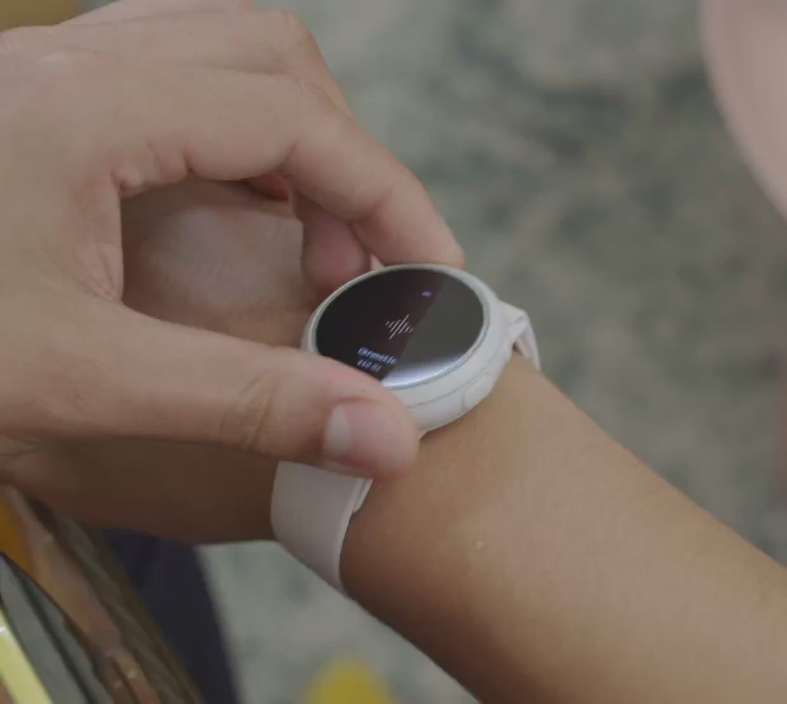

手腕上的节拍器——Soundbrenner 新手入门指南
第一次听说振动节拍器？这篇从"它到底是什么"讲起，手把手带你五分钟搞定 Soundbrenner 的下载、配对和第一次练习，零音乐基础也能看懂。
这篇能带你从完全不懂到用起来——不需要你会任何乐器、不需要你懂什么是 BPM，跟着一步步做就能在手腕上感受到节拍。
它到底是干嘛的？一个生活化类比讲明白
想象一下你在跑步时戴着运动手环，手环会根据你的配速帮你把控节奏。Soundbrenner官网 干的事情差不多——只不过它的"配速"换成了音乐里的节拍（BPM，每分钟节拍数），戴在手腕上，通过振动把节拍传递给你。
为什么不用手机外放？因为音乐练习时你要么戴着耳机、要么音箱开得很大，手机的声音容易被淹没，或者戴久了伤耳朵。振动就不一样了——走皮肤这条通道，和耳朵完全独立，无论周围多吵都能精准感知。这也是为什么专业乐队演出时很多人戴它。
Soundbrenner 不是只有硬件，它有一套配套的手机 App。硬件负责"戴在手上振动"，App 负责"设置节拍、追踪练习、调音"。两者蓝牙配对后协同工作。

五分钟上手：从下载到第一次振动
别担心，整个流程就是三步——下载 App、打开蓝牙配对、设一个节拍让它振起来。
第一步：下载 App。从官方下载拿安装包，或者去应用商店搜 Soundbrenner也行。目前它有 iOS 和 Android 两个版本，安卓用户直接搜就能找到。打开后如果提示注册账号，用邮箱注册一个就行，免费功能不用订阅。
第二步：准备硬件设备。Soundbrenner 的产品线有好几款：Pulse 是入门款（纯振动节拍器，没有屏幕）、Core 2 是主力款（有屏幕、调音器、练习追踪，日常还能当手表戴）、Spark 是 2025 年出的新型号。如果你刚入门，Pulse 或 Spark 都够用；如果想一步到位就上 Core 2。
不管哪款，先把设备充好电（首次拿到没电是正常的）。充的时候用它附带的磁吸充电线，2 小时就能充满。
第三步：蓝牙配对。打开手机蓝牙，长按 Soundbrenner 设备侧面的按钮开机。App 会自动扫描附近的设备，在列表里点你的设备名就能连上。配对成功后，App 首页会显示设备已连接的状态，设备本身的 LED 灯会亮一下确认。

现在你可以动手设节拍了——在 App 首页拖那个 BPM 滑块，调到 80（一个很舒缓的速度），点播放按钮。手腕上立刻感觉到振动，每拍一下，稳定、有力。恭喜你，第一次节拍器振动搞定了。
上手后先玩这三个功能
节拍器能振起来只是开始，Soundbrenner 的真正价值在下面这三个功能——新手最应该先碰，每个都是"你会看到什么 + 这意味着什么"。
练习追踪：每天坚持的动力
App 里有一个"练习追踪"功能，你每次用节拍器练琴的时间、用的速度、练了什么，都会被记录下来。它有一个连胜日历——连续每天都有练习，日历上的格子就变成一串连续的标记，断了一天就从头来过。
你会发现：本来只是想"今天练半小时"，但看到日历上已经连了五天，就不想让它断掉。这就是它的巧思——用可视化的连续记录把"要不要练"变成"我不想断掉"。
如果你戴的是 Core 2，设备本身还能显示一些练习数据（比如当天练了多久），不用掏手机就能看一眼。

调音器：手腕上直接用
Core 2 和 Spark 都内置了调音器。当你需要给吉他、贝斯、尤克里里调音时，不用再找手机 App 或专业调音器——直接在 Soundbrenner 上调。
怎么用？短按设备上的按钮切到调音模式（Core 2 有屏幕会显示调音界面），然后拨动你的乐器琴弦。设备上的 LED 灯会告诉你音准不准——绿色是准了，红色偏左或偏右，慢慢调到全绿就行。
这个功能在什么场景特别好用？比如你在演出前琴弦突然松了，或者练琴到一半想确认一下音准——低头看手腕就搞定，不用停下来掏手机、不用对着麦克风。
渐进变速：让节拍自己慢慢变快
这是 Soundbrenner Plus（订阅服务）的一个核心功能——让节拍器在你练习中自动改变 BPM。你可以设"从 60 BPM 开始，每 4 小节加速 1 BPM，一直加到 100 BPM"，然后就只管专心练，节拍器自己会慢慢提速。
你会发现：传统练速度是"60 练一周、70 练一周、80 练一周"，每一步都要手动调。渐进变速是"在持续加速中保持节奏"——更接近真实演出里那种"乐队越演越嗨、BPM 微微变快"的感觉。
别担心入门阶段用不上这个——先用免费功能把基础打牢，等你能稳定在几个速度上练习了，再考虑要不要开 Plus。更多进阶玩法可以看Soundbrenner文档。

新手的三个常见疑问
问题一：没有乐器也能用吗？
可以。Soundbrenner 本质是节拍器，节拍器是通用工具——不管你练乐器、练唱歌、甚至想用来跑步配速，都能用到。纯用它来感受节拍、训练自己的节奏感也完全没问题。
问题二：电池续航怎么样？怕出门没电
Core 2 当手表用可以撑 4 天，连续开节拍器模式可以撑 3 小时。Pulse 纯节拍器模式可以撑 6 小时。日常用的话晚上摘下来充电，第二天出门就满电了，不用带充电宝。
问题三：只有我一个人戴，需要多设备同步吗？
不需要。多设备同步（最多 5 台可穿戴连一台手机、或者跨手机用 Ableton Link 同步）是乐队场景才需要的——比如鼓手设 BPM，贝斯、吉他、主唱每个人手腕上跟着同一个节拍。你自己一个人用的话，一台设备配一台手机，直接振动就行。
最后
能读到这里，你已经比大部分刚听说振动节拍器的人走得更远了。现在你知道了它是什么、怎么上手、三个最值得先玩的功能是什么。下一步很简单——找一台附近的 Soundbrenner 设备（或者自己入手一台），按五步流程走一遍，感受一下手腕上的节拍是什么感觉。
如果想深入，Soundbrenner 还有很多进阶玩法——舞台演出时怎么让全队同步节拍、怎么配合 Ableton Live 做更精细的配置、怎么把 Core 2 的计步数据同步到健康 App 里。这些等你把手头的基础功能玩熟了再探索也不迟。出于备份考虑，我把这套资料分别存了一份在GitHub、Gitee和GitCode上，哪个用着顺手就去哪个。